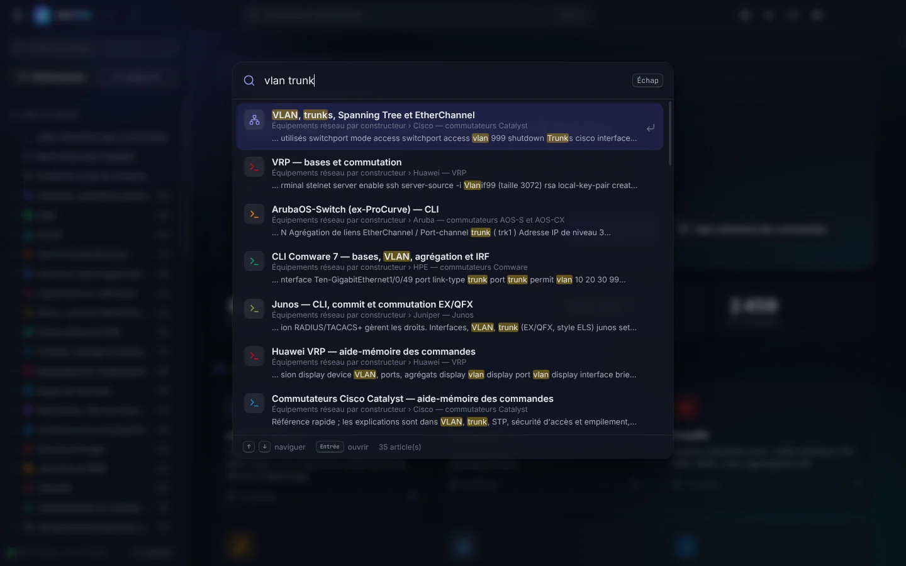
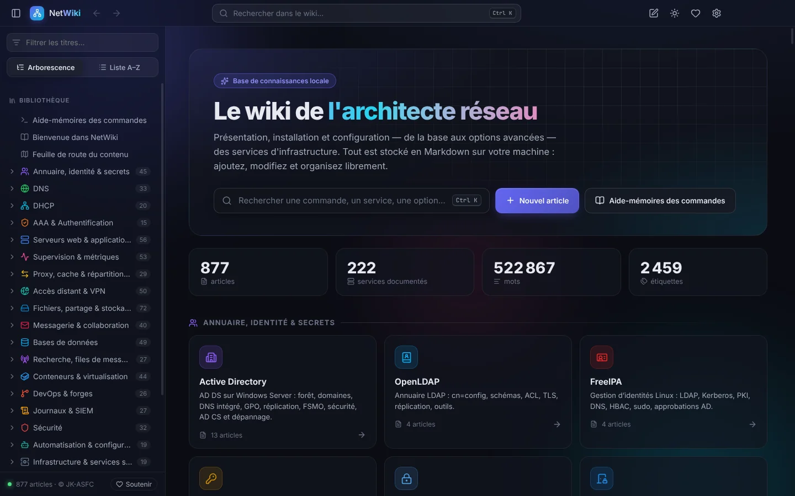
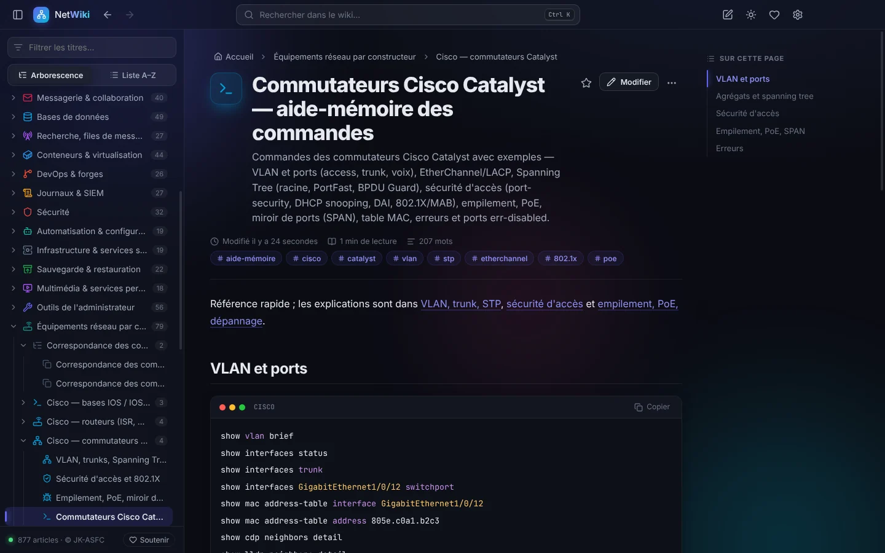
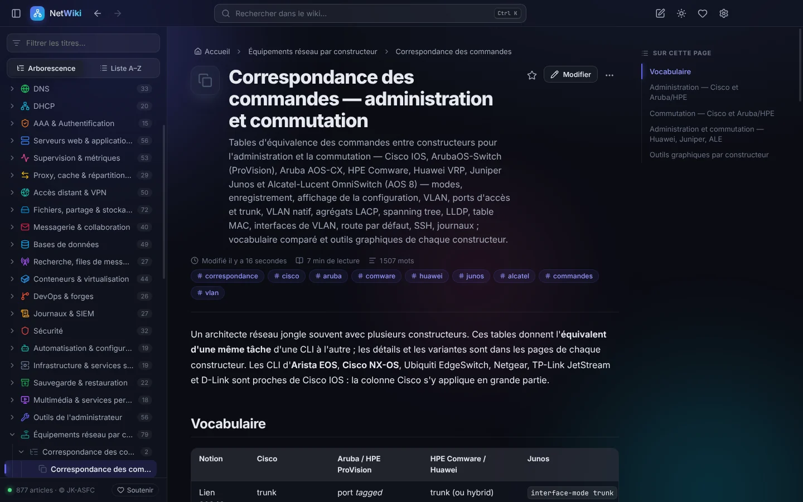
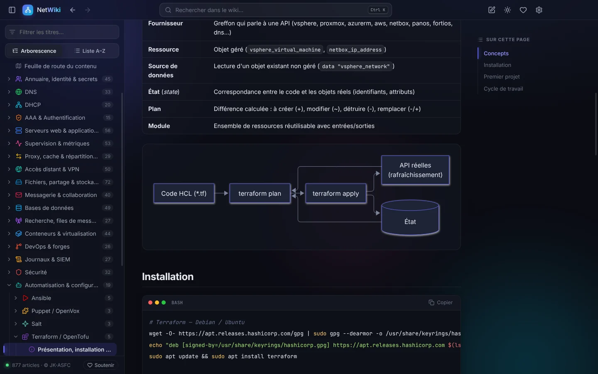
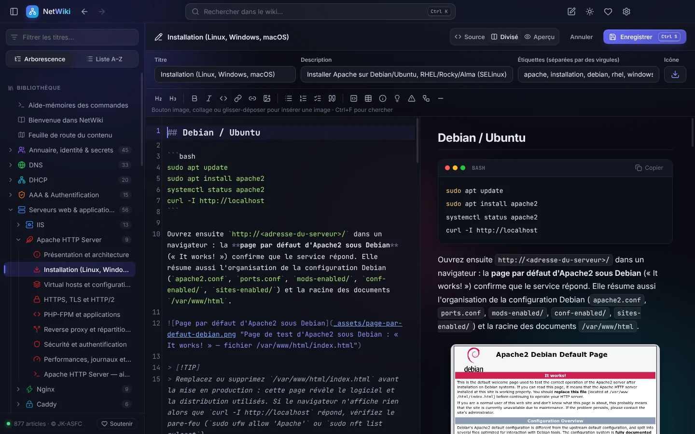
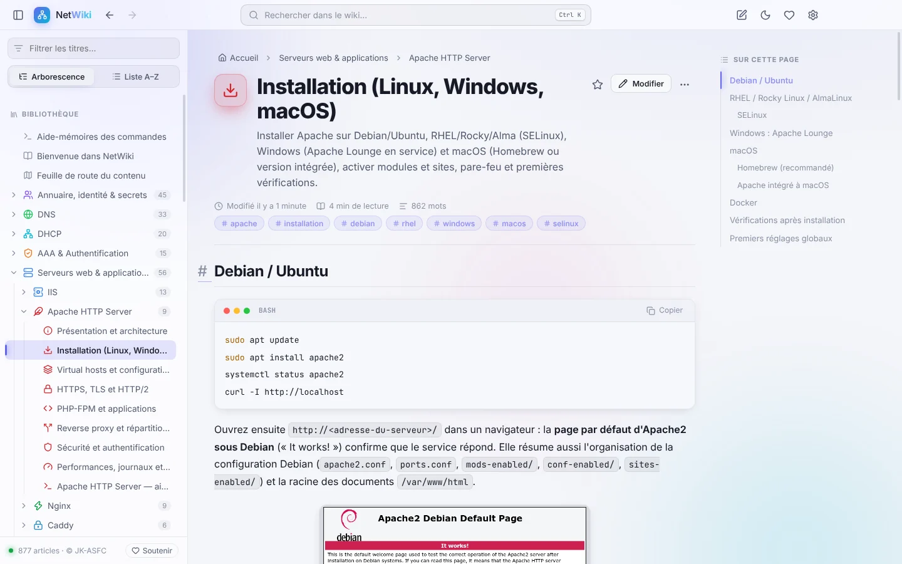

Recherche instantanée
Ctrl K, quelques lettres, et les résultats s'affichent pendant la frappe, mots surlignés, dans tout le wiki.

Services, Windows Server, Cisco, Fortinet, Palo Alto, Juniper, téléphonie IP… {{articles}} articles en français et {{cheatsheets}} aide-mémoires de commandes, retrouvés en un éclair et consultables sans Internet.

Né d'un constat simple : « Marre de chercher dans tous les articles. » NetWiki réunit procédures, commandes et bonnes pratiques dans une application rapide, belle et privée.
Ctrl K, quelques lettres, et les résultats s'affichent pendant la frappe, mots surlignés, dans tout le wiki.

Commandes par service et par constructeur, avec exemples prêts à copier en un clic.
La même tâche chez Cisco, Aruba, HPE, Huawei, Juniper, Alcatel… Essayez la démo.
En salle serveur, en datacenter ou en déplacement : tout est sur votre poste.
Articles en Markdown modifiables, captures d'écran, nouvelles pages, export PDF.
Paquet signé publié tous les lundis, récapitulatif des ajouts avant installation.
Diagrammes Mermaid, coloration syntaxique de dizaines de langages, encadrés et tableaux.
Windows, macOS, Linux et Android ; thème sombre ou clair, couleur d'accent au choix.
Aucune télémétrie, aucun compte, aucune publicité. Code ouvert sous licence MIT.
Chaque service a sa fiche : présentation, installation (Linux, Windows, macOS), configuration, sécurité, dépannage et aide-mémoire.
Captures réelles de NetWiki {{version}}. Cliquez sur une image pour l'agrandir.





Extrait réel des tables de correspondance de NetWiki. Choisissez une tâche :
Lancez NetWiki-Setup.exe : installation pour votre compte, sans droits administrateur. Ou utilisez NetWiki-portable.exe, sans installation.
Message « Windows a protégé votre ordinateur » : Informations complémentaires → Exécuter quand même (logiciel pas encore signé par un certificat Microsoft).
Ouvrez le .dmg et glissez NetWiki dans Applications. Au premier lancement : clic droit → Ouvrir, puis confirmez.
chmod +x NetWiki-*.AppImage && ./NetWiki-*.AppImage
# ou (Debian / Ubuntu)
sudo apt install ./netwiki_*_amd64.debInstallez l'APK de test (autorisez les sources inconnues). Même interface et même contenu, hors ligne.
.md dans un dossier à synchroniser avec Git, un NAS ou un cloud..netwiki pour un poste hors ligne..netwiki à la main.Articles et réglages restent sur votre poste. Aucun compte, aucune télémétrie, aucune publicité.
Contenu et logiciel installés seulement s'ils sont signés par JK-ASFC (Ed25519) ; sinon refusés.
Electron durci : bac à sable, isolation du contexte, ni caméra ni micro, outils de développement désactivés.
Gratuit, sans inscription. Fichiers publiés sur GitHub par la compilation automatique.
Windows 10 et 11 (64 bits)
Installateur Version portableApple Silicon (M1 et suivants)
Fichier .dmg Archive .zipx64 — toutes distributions
AppImage Paquet .debAPK de test (avant le Play Store)
APK Contenu .netwiki
Empreintes SHA-256 de chaque fichier sur la page de la version ; vérification sous Windows : Get-FileHash .\NetWiki-Setup-*.exe. iOS : bientôt sur l'App Store.
NetWiki est rédigé, vérifié et maintenu bénévolement par JK-ASFC, avec de nouveaux articles chaque semaine. Si le wiki vous fait gagner du temps, un don, même modeste, aide à le faire vivre.
Oui, entièrement : pas d'abonnement, pas de version premium, pas de publicité. Le code est open source sous licence MIT. Les dons sont facultatifs.
Non. Tout le wiki est installé sur votre poste et fonctionne hors ligne. Internet ne sert qu'aux mises à jour, et seulement si vous l'acceptez ; un poste isolé peut importer un paquet .netwiki.
Elles restent sur votre ordinateur : NetWiki n'envoie rien, ne collecte rien et ne crée aucun compte. Vos articles sont de simples fichiers Markdown que vous pouvez sauvegarder ou synchroniser comme vous le souhaitez.
L'installateur n'est pas encore signé par un certificat de signature de code reconnu par Microsoft (une démarche est en cours). Cliquez sur Informations complémentaires puis Exécuter quand même. Vous pouvez vérifier le fichier en comparant son empreinte SHA-256 avec celle publiée sur la page de la version.
NetWiki est un projet personnel conçu à 50 / 50 avec l'IA : JK-ASFC définit, oriente, relit et teste ; l'IA (Claude) rédige une grande partie des articles et du code. Chaque lot est validé automatiquement (liens, tableaux, code, diagrammes). Une erreur ? Signalez-la sur GitHub, elle sera corrigée dans la mise à jour suivante.
Avec plaisir : ouvrez une Issue sur GitHub. Les demandes alimentent les publications hebdomadaires.
Non. Un article que vous avez modifié ou supprimé est conservé tel quel ; seuls les articles officiels inchangés sont mis à jour.